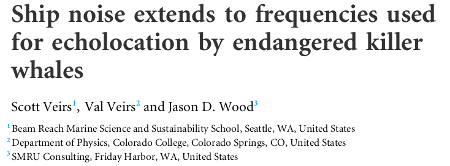

We have learned the following:
Large vessels transiting Haro Strait are the dominant noise sources and these large commercial ships create lots of noise in the hearing range of the orcas.

Previous Slide
Next Slide